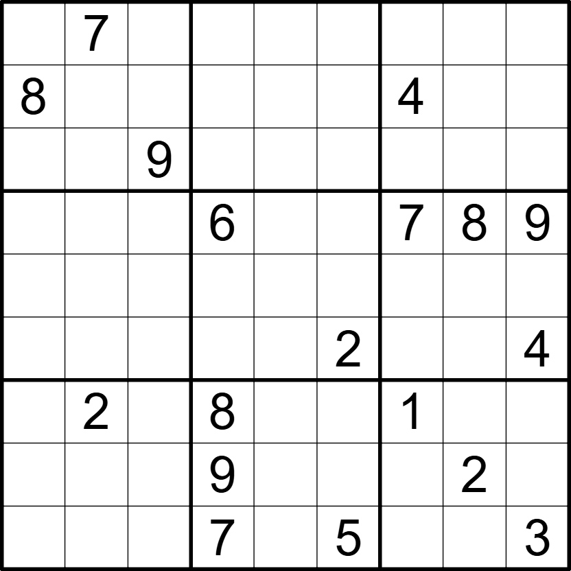

Paardslag - ⭐️⭐️

LINK
REGELS:
Standaard sudoku:
Plaats de cijfers van 1 t/m 9 eenmaal in elke rij, kolom, en 3x3 blok.
Anti-knight:
Vakjes die in één zet door een paard te overbruggen zijn bevatten verschillende cijfers.